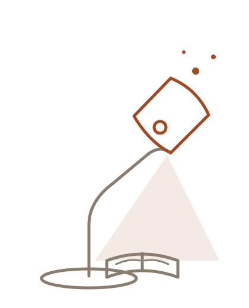
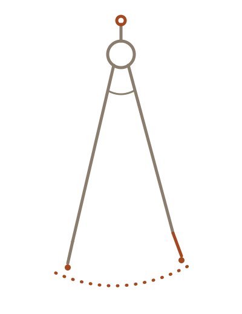

You finished the writing. The research is solid, the argument lands, and the draft says exactly what you meant it to say. Then you export it, look at the result, and feel the air go out of the room. A wall of grey text. A document that whispers skip me to every reader it meets. This guide is about the distance between those two moments — between writing something worth reading and presenting something that gets read — and how to close it without becoming a designer.
Why presentation decides what happens next
Nobody reads a document before deciding whether to read it. The decision happens earlier, in a glance that lasts a breath, and it is made almost entirely on visual evidence. Hierarchy, margins, rhythm, restraint: readers cannot name these things, but they respond to all of them.
The numbers are blunt about it.
A document that looks considered earns consideration. A document that looks like a data dump gets treated like one, no matter how good the sentences are. That asymmetry feels unfair to writers, and it is. It is also the single cheapest thing to fix in your entire publishing process.
The craft that closes the gap is editorial design: the accumulated judgment of a century of magazines, journals, and books about how reading is supposed to feel. It has rules. The rules are learnable. Better still, they are borrowable.
The anatomy of attention

Attention is a budget, and every element on the page spends from it. The publications that feel effortless are the ones that spend deliberately.
Three mechanisms do most of the work.
Hierarchy
The reader's eye should know where to land before the reader knows they are looking. Title, section opener, body, aside: each level gets one consistent treatment, and the levels differ enough that no one ever has to think about them. When everything shouts, everything is noise.
Measure
Lines that run too long exhaust the eye on the return trip. Book designers settled on sixty to seventy characters per line generations ago, and no screen, phone, or format change has moved the number since. Constraining the column is the single most powerful improvement most documents will ever receive.
Rhythm
Dense passages need relief. A pull quote, a statistic given room to breathe, an illustration leaning into the margin — these are pacing devices, not decoration. They tell the reader you may rest here and then return them to the text refreshed. A publication with no quiet sections has no loud ones either: contrast is the whole instrument.
The five decisions

Every well-made publication, from a zine to a journal, is the product of the same five decisions made in the same order.
- Read the whole piece once without touching anything. You cannot pace what you have not felt.
- Find the natural sections and the single idea each one carries. If a section carries three ideas, it is three sections.
- Choose the moments that deserve visual emphasis — at most one per section. The statistic that stops you. The sentence you would quote to a friend.
- Pick one coherent style and stay inside it. Consistency reads as confidence; novelty per page reads as chaos.
- Compose, then review on a desktop, on a phone, and in print. Three different readers live at those three sizes.
Notice what is absent from the list: software skills, color theory, a fonts folder with four hundred entries. The decisions are editorial, not technical. Taste is knowing which moments matter. Everything after that is execution.
Common failures, and what they cost
The same handful of mistakes account for nearly every document that looks homemade. All of them are cheap to avoid once named.
| Failure | What the reader experiences | The fix |
|---|---|---|
| No hierarchy | Everything shouts at the same volume | One scale, applied consistently |
| Endless measure | The eye loses the line on every return | Constrain the column |
| Ornament everywhere | Fatigue, then distrust | Cut anything without a job |
| Center-aligned body text | Ragged starts exhaust the reader | Center display, not paragraphs |
| Screenshot PDFs | Broken pages and microscopic type | Compose print as its own edition |
The last one deserves a special word. Exporting a webpage to PDF by printing it is not publishing; it is photocopying. A real print edition makes its own decisions — where pages break, how figures sit, what the margins hold — and readers can feel the difference before the first page turn.
What restraint buys you
Here is the counterintuitive part: the strongest tool in the entire editorial kit is the decision to do nothing.
Empty margin is not wasted space. It is the frame that makes the picture legible. The quiet section after a loud one is not missing content; it is what makes the loud section loud. When a spread feels wrong and you cannot say why, the answer is almost never add something.
Restraint is also what separates borrowed taste from imitated taste. Anyone can copy a beautiful publication's fonts. What made it beautiful was the judgment about when to use them at full volume and when to whisper — and that judgment transfers to any document, in any style, forever.
Where to start tomorrow
Do not redesign everything you have ever published. Pick the one document that earns its keep — the guide people actually download, the piece you send to every new client — and give it the five decisions. One coherent style. One constrained column. One visual event per section. A real print edition.
Then put it next to the old version and look at both the way a stranger would, for four seconds each.
The writers whose work travels are not the ones who learned design software. They are the ones who understood, a little earlier than everyone else, that presentation is part of the argument — and then found the tools that let the writing stay the point.